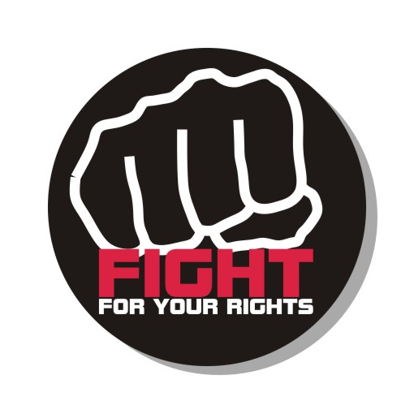

Soukromí je ta sféra života člověka, do které nikdo včetně státu nesmí bez souhlasu člověka nebo bez výslovného dovolení zákona zasahovat ani o ni požadovat či získávat informace, a o které subjekt soukromí není povinen nikomu (ani státnímu orgánu) informace dávat, pokud mu to zákon neukládá.
ikipedia
NESMIRUJ

Rád bych zde upozornil, že nikoho nenabádám k nějaké trestné činnosti a všechny informace obsažené
na tomto webu jsou z volně dostupných zdrojů na internetu. Naopak rád bych, aby se lidé více
zamysleli a chránili své soukromí, než vstoupí do širých vod internetu. Přeci nemusí každá hra či
aplikace vědět, že pravidelně venčíte psa se sousedkou a narovinu, kdo z nás vypíná
internetové připojení, když zrovna neserfuje? Kdo z nás vypíná bluetooth a wifi, když je zrovna
nepoužívá? Nebojím se odpovědět: "Málo kdo". A všechny tyto technologie průběžně sbírají informace o
vašich aktivitách a zvycích. Nejde o jednu konkrétní informaci, ale jde o množinu dat z různých
zdrojů, ze které se nakonec určí váš profil uživatele, kde se vyhodnotí vaše návyky, názory a
lokace. Může to být webový formulář, kam zadáváte údaje, můžou to být wifi v supermarketu, může to
být provařená
emailová adresa, může to být reklama, co se vám ukazuje v prohlížeči a zůstává běžet na pozadí,
problém může být ve finále cokoliv.
Výše uvedené je sice trošku BIG BROTHER , ale stejně by se měl člověk zamyslet, jestli dělá dost proto, aby ochránil své soukromí, které je pak zpoplatňováno či zneužíváno na internetu. Prostředky na ochranu jsou dokonce i zdarma, jen to vyžaduje zapojení nějaké té mozkové kapacity navíc.
Výše uvedené je sice trošku BIG BROTHER , ale stejně by se měl člověk zamyslet, jestli dělá dost proto, aby ochránil své soukromí, které je pak zpoplatňováno či zneužíváno na internetu. Prostředky na ochranu jsou dokonce i zdarma, jen to vyžaduje zapojení nějaké té mozkové kapacity navíc.
Používejte nástroje k vaší ochraně před útoky hackerů, virů.
Skryjte své osobní a geolokační údaje o vaší poloze.
Zamezte cílení reklamy na vaší osobu.
Používejte kryptoměny pro anonymní platby.
Skryjte své osobní a geolokační údaje o vaší poloze.
Zamezte cílení reklamy na vaší osobu.
Používejte kryptoměny pro anonymní platby.